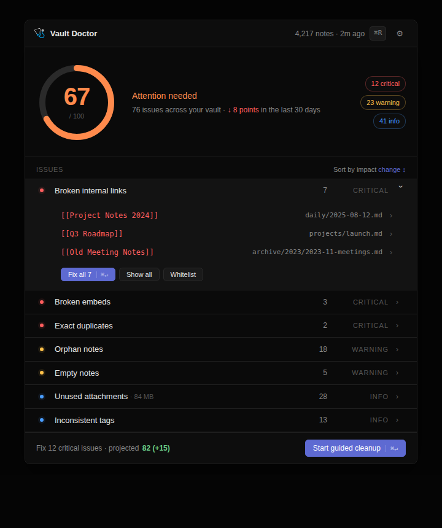

Vault Doctor The linter for your second brain.
Every Obsidian vault degrades after 1–3 years — broken links, orphan notes, duplicates, ghost attachments piling up silently. Vault Doctor diagnoses it and fixes the worst issues in one click.

The dashboard. Score on the left, issues grouped by severity, "Fix all" / "Show all" / "Whitelist" per rule.
One pane. One score. One-click fixes.
Vault-wide health score
A 0–100 number that summarises the structural health of your vault, tracked over time so you can see decay before it gets bad.
Detection rules that matter
Broken internal links, broken embeds, orphan notes, exact duplicates, empty notes, unused attachments, inconsistent tags.
Guided cleanup with per-issue control
Issues grouped by severity. Pick a default action per rule, then expand to override on a per-note basis — archive these, delete that one, skip the third. One Apply.
Cross-rule deduplication
A note flagged as empty, oversized, or duplicate isn't also re-flagged as orphan. The dashboard shows you the most-actionable label, not three labels for the same note.
Ten rules. One scan. No surprises.
Broken links & embeds
[[wikilink]] and ![[embed]] that resolve to nothing. The most expensive bug in any aging vault.
Exact duplicates
Two notes with identical content. The older one wins as canonical, the copy is offered for deletion.
Orphan & empty notes
No links in, no links out. Or under 50 characters. Likely abandoned drafts, archive candidates.
Orphan attachments
Image, PDF, audio that no note references. The "where did all this disk space go" rule.
Inconsistent tags
#projet, #Projet, #projets — same logical tag in three forms. Auto-fix by normalising to the most-used variant.
Stale, oversized, daily gaps
Untouched 12+ months. Above 50k words. Missing days in a daily-note sequence. Soft signals, your call to act.
Trust signals, not feature flags.
100% local
No network calls, ever. Your notes never leave your machine. The plugin has no telemetry and no remote config.
Dry-run by default
Every rule previews the change before touching a single byte. You explicitly opt in to each fix.
System trash only
No real delete. Files go to the OS trash — recoverable for as long as your trash retains them.
Persistent whitelist
Mark a note or attachment as "intentional" once and Vault Doctor remembers. The whitelist lives in the note's frontmatter, version-controllable.
Sideload in three commands.
Not yet in the community plugin store. To run the alpha against your own vault — or against the bundled test vault that triggers every rule once:
git clone https://github.com/itzenata/vault-doctor.git
cd vault-doctor && npm install && npm run build
ln -sfn "$(pwd)" /path/to/your-vault/.obsidian/plugins/vault-doctorThen in Obsidian: Settings → Community plugins → enable Vault Doctor, reload the app, run the scan command.